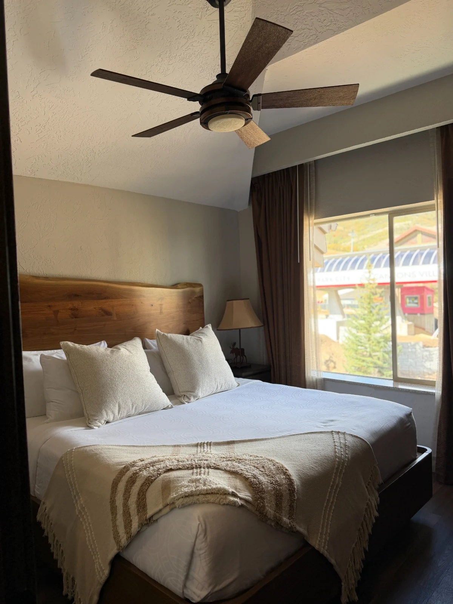
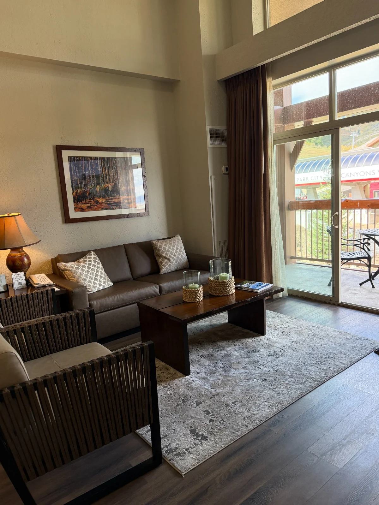
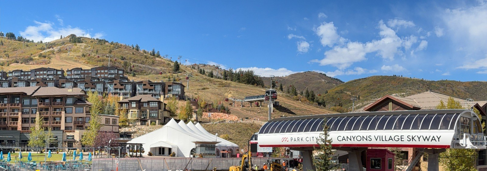

Presidents' Week is the hardest week of the year to book a ski trip in Park City, and the units that sleep a whole family go first. Here is what the week looks like in Canyons Village, what ski-in ski-out means once you are standing there, and how far ahead the good lodging disappears.

The exact dates of Presidents' Week 2027
Presidents' Day is always the third Monday in February; in 2027 that is Monday 15 February. Park City lodging runs Saturday to Saturday, so the ski week is Saturday 13 to Saturday 20 February 2027. It sells out well before the shoulder weeks either side, because school holidays across much of the north east and midwest stack on the same calendar.
Two dated details sit inside the week and neither is widely written up. 13 and 14 February 2027 are restricted dates for the Epic Local Pass at Park City, on Epic's own peak-restricted-dates list, so a holder arriving on the Saturday cannot ski the first two days on the pass. The full Epic Pass carries no blackouts, and pass guides report half-price pass-holder tickets on restricted dates — confirm with Epic before relying on it.
| Date | What is happening |
|---|---|
| Sat 13 Feb | Week begins. Free Silver Sky Nights fireworks, Forum Stage. Epic Local restricted |
| Sun 14 Feb | Epic Local restricted, the last blackout day |
| Mon 15 Feb | Presidents' Day |
| Sat 20 Feb | Week ends |
The Silver Sky evening is run by the Canyons Village Management Association. Listings disagree on its start time, so check cvma.com nearer the date.
If you need a unit sleeping six or more with ski access, you are competing with every other family on the same calendar — and on an Epic Local Pass, the first two days of the week are blacked out.
Where Canyons Village is, and what ski-in ski-out means
Park City Mountain Resort has two base areas: the Park City base at the bottom of the historic Main Street, and Canyons Village, a purpose-built ski village ten minutes away by road. One lift ticket covers both, so for skiing they are the same resort. For staying they are not alike at all, and a listing saying nothing more precise than "Park City" could be at either, or fifteen minutes from both.
Ski-in ski-out is not a regulated term either. In Park City it covers everything from a door that opens onto a run to a building where you carry skis ten minutes across a car park. In Canyons Village the main uphill lift is the Red Pine Gondola, and the village is built around it, with the Orange Bubble Express and the Sunrise Gondola also in the village. The ticket office sits at the bottom of the Red Pine Gondola, so collecting passes on the first morning is a walk rather than a drive.

What varies is which building you are in: a unit at one edge of the village is a genuinely different walk from one beside the gondola, especially with a six year old and a day's kit. Two questions settle it — which lift do I walk to, and where do the skis live overnight? Ask for the name of the lift, not a reassurance. Get this right and you may not need a car at all.
Why this one week behaves differently
Rates move with demand all season, but Presidents' Week is its own category. School calendars line up, so the people who want the week cannot shift it. Lift capacity does not change, so the mountain runs at its busiest. And the supply of lodging sleeping a whole family in one unit is small, because most inventory is studios and one-bedrooms built for couples. Nightly rates for a comparable two-bedroom villa commonly run $800 to $1,200 and beyond in this window, and the units at the bottom of that range are gone by early winter.
Skiing the week itself
The mountain is busy, and pretending otherwise helps nobody. Ski the first hour, because the gondola queue at nine is nothing like the queue at eleven, and eat lunch early or late, because the restaurants fill on a tighter schedule than the lifts do. Staying in the village helps in a way that is easy to underrate: a mid-afternoon break costs nothing, and the family that takes one is still skiing on Thursday. More in February conditions and crowds.
What a week costs, and what gets added at the end
Budget the nightly rate, then budget what is not in it. For a family of six to eight that means lodging, the number that moves most with how early you book; lift tickets, the largest line after lodging, where buying multi-day in advance costs meaningfully less than the window and a pass can be worth the maths; resort and village fees, added nightly by many properties and not always shown until checkout; equipment, where booking ahead beats walking in; and food, where a full kitchen changes the arithmetic by hundreds across a week for eight.
Ask for the all-in total for your exact dates, with cleaning, resort fees, village assessments and tax included. A rate that looks lower per night sometimes is not.

When to book, and what goes first
For a mid-February stay, the ski-in units that sleep a whole family tend to go between October and early January. Larger units go earliest, because there are fewer of them and because a family of eight cannot substitute two studios for a two-bedroom. In autumn you are still choosing; by January you are taking what is left, at whatever it costs by then.
Booking direct against the large sites
Most Westgate units are rented out by individual owners rather than by the resort, so the same unit can appear on several sites at several prices as each platform adds its own fee. Going direct removes it, and gets you someone who has slept in the unit — longer checklist in booking direct from an owner.
- Why Presidents' Week Sells Out First in Park City
- When to Book Park City for a Peak Week
- Canyons Village or the Park City Base: Which Side to Stay On
- What Ski-in Ski-out Actually Means in Park City
- What a Park City Ski Week Actually Costs for a Family of Eight
- Salt Lake City Airport to Park City: Every Way to Make the Transfer
Common questions
What are the exact dates of Presidents' Week 2027 in Park City?
Presidents' Day 2027 falls on Monday 15 February. The ski week built around it runs Saturday 13 February to Saturday 20 February 2027, which is the standard Saturday-to-Saturday changeover most Park City lodging uses. That seven-night block is what sells out first.
Can I use an Epic Local Pass at Park City during Presidents' Week 2027?
Not on the first two days. Park City is on Epic's restricted-resort list, and 13 and 14 February 2027 are restricted dates for the Epic Local Pass, so a holder arriving on the Saturday cannot ski those two days on the pass. The full Epic Pass carries no blackouts. Pass guides report that half-price pass-holder tickets are available on restricted dates, which is worth confirming with Epic directly.
Which lift is closest to Westgate Park City Resort?
The Red Pine Gondola, the main uphill lift out of Canyons Village, is a short walk from the Westgate buildings. The Orange Bubble Express and the Sunrise Gondola are also in the village. The Canyons base ticket office sits at the bottom of the Red Pine Gondola.
How far in advance should I book Park City for Presidents' Week?
Ski-in lodging that sleeps a full family tends to go between October and early January for a mid-February stay. Larger units go earliest because there are fewer of them. If you are reading this in autumn and your dates are fixed, you are in the window where choice still exists.
The villa this guide comes from
We own a Premier Two-Bedroom Villa inside Westgate Park City Resort, in Canyons Village. It is 1,100 square feet, two king bedrooms and two queen sleeper sofas, so it sleeps eight in one unit. Full kitchen, two bathrooms, in-unit laundry, and a short walk to the Red Pine Gondola.
It is available for Presidents' Week 2027, 13 to 20 February, and we rent it ourselves rather than through an agency.